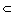

The direct symmetries or rotations of the tetrahedron map to the elements of A4 × {I}  S4 × < J >.
The opposite symmetries of the tetrahedron map to symmetries of the cube of the form P × J where P is an odd permutation in S4.
The kernel of the map is trivial.